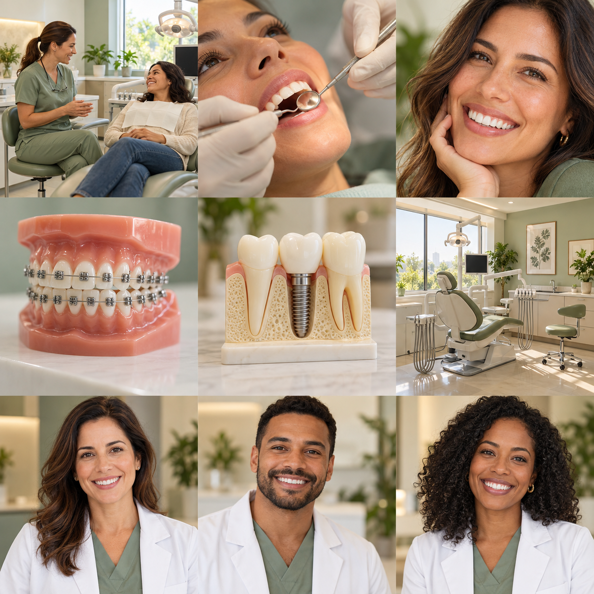

01
Prevenção e limpeza
Acompanhamento da saúde bucal, orientações de higiene e cuidados preventivos.
CUIDADO EM CADA DETALHE
Um espaço para ouvir você, entender suas necessidades e cuidar da sua saúde bucal com atenção e acolhimento.
Conheça os tratamentos ↗Odontologia com escuta, clareza e cuidado.

Um novo olhar para
o seu sorriso.
TRATAMENTOS
Conheça algumas áreas da odontologia. A indicação de cada tratamento depende de avaliação profissional.
Acompanhamento da saúde bucal, orientações de higiene e cuidados preventivos.
Avaliação de opções para cuidar da aparência do sorriso, respeitando suas características.
Avaliação do alinhamento dos dentes e da mordida, com planejamento individualizado.
Planejamento de cuidados para recuperar a função e o conforto no dia a dia.
Tratamentos apresentados apenas para demonstrar o site de uma clínica fictícia.
A CLÍNICA
Acreditamos que você deve se sentir à vontade para perguntar, compreender as opções e participar das decisões sobre sua saúde bucal.
Nesta demonstração, a Clínica Freitas é um espaço imaginário com salas acolhedoras e uma equipe dedicada a tornar cada visita mais tranquila. Todos os dados são fictícios.
Vamos conversar ↗QUEM CUIDA DE VOCÊ
Conheça os personagens criados para esta demonstração. Os nomes e as atuações abaixo são fictícios.
Personagem fictícia · Cuidados preventivos e odontologia geral.
Personagem fictício · Ortodontia e planejamento do sorriso.
Personagem fictícia · Odontologia estética e reabilitação oral.
VAMOS CONVERSAR?
Este é um exemplo de como os contatos aparecerão no site. A clínica, o endereço, a equipe e os horários são fictícios; não há agendamentos ou atendimentos.
WhatsApp demonstrativo · Nenhuma mensagem será enviada.
(00) 00000-0000 · Número fictício
Rua dos Sorrisos, 123 · Bairro Jardim
Cidade Exemplo · Local fictício
Segunda a sexta: 8h às 18h
Sábado: 8h às 12h · Horários fictícios